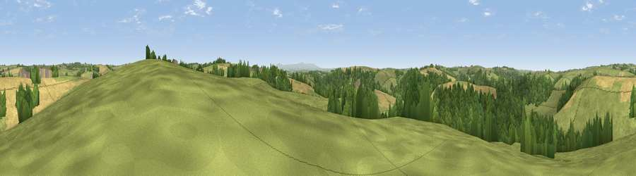

Viewpoint near Beaford
#24816 in England · top 47% of its area beats it · near BeafordThe view, rendered

A 360° render of this exact spot computed from the terrain model, tree cover and land cover — summer colours, afternoon light, calibrated against photographs of famous viewpoints. Real trees, hedges and buildings will differ in detail.
The panorama
Grey silhouette: terrain skyline in each direction (720 bearings, Earth curvature and refraction included). Dashed green: skyline with trees (+15 m) and buildings (+8 m) as obstacles. Blue strip: how far the ground is visible on each bearing.
Where the view opens
Wedge length = distance to the farthest visible ground on that bearing (vegetation-aware). Rings at 10, 25 and 50 km.
What fills the view
48% grassland · 34% woodland · 18% cropland
Angular shares of the visible panorama (visual magnitude), not map area. Landscape diversity 0.45 (0–1 Shannon).
Key numbers
More beautiful places nearby
The staircase of upgrades: each row has a higher view potential than everything closer. Driving times are estimates from straight-line distance, calibrated against real road routing — check an actual route before setting out.
| Place | Direction | Drive | Score |
|---|---|---|---|
| Viewpoint near Beaford | ENE · 1 km | ~2 min | 52.3 |
| Viewpoint near Kingscott | NNW · 2 km | ~6 min | 53.5 |
| Viewpoint near Little Torrington | WSW · 3 km | ~7 min | 59.1 |
| Viewpoint near Little Torrington | WSW · 3 km | ~8 min | 59.7 |
| Viewpoint near Little Torrington | W · 4 km | ~9 min | 62.8 |
| Viewpoint near High Bullen | NNW · 6 km | ~12 min | 71.2 |
| Viewpoint near Alverdiscott | NNW · 10 km | ~20 min | 71.7 |
| Viewpoint near Bideford | NW · 11 km | ~21 min | 73.5 |
50.92419, -4.08261 · source: screening · position refined by local search. Computed location — check access rights before visiting.